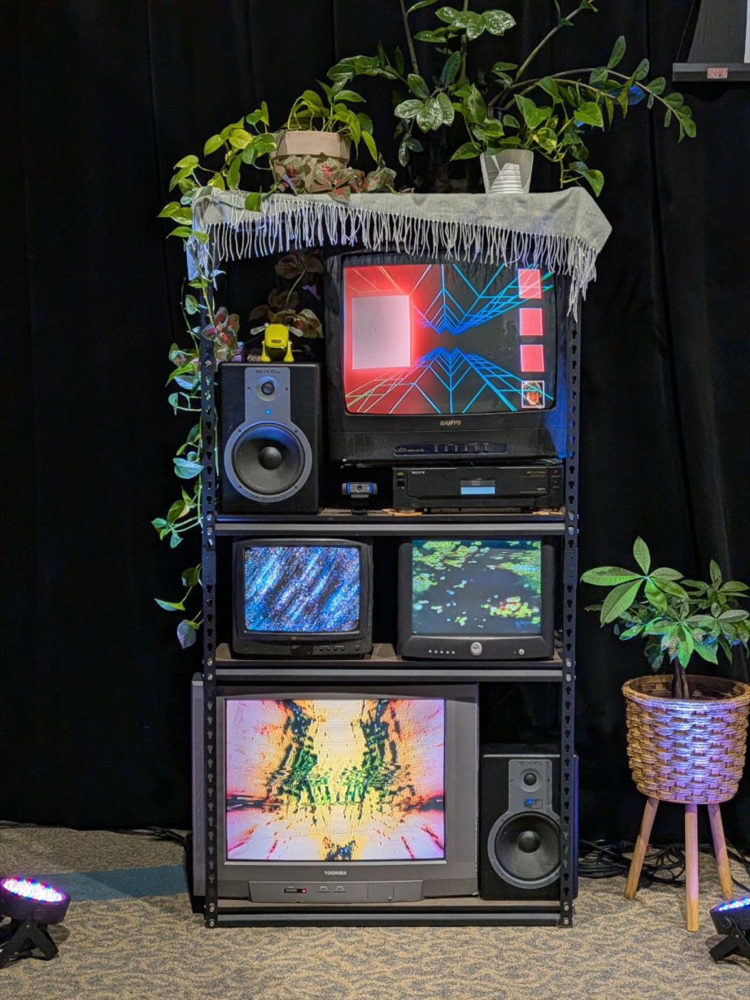
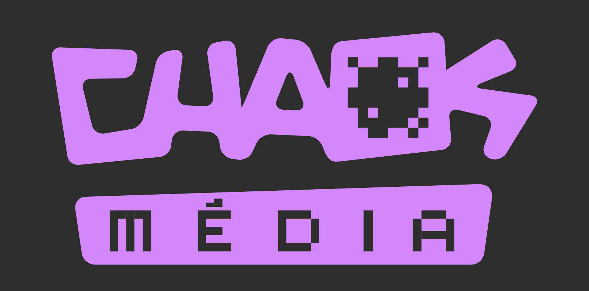
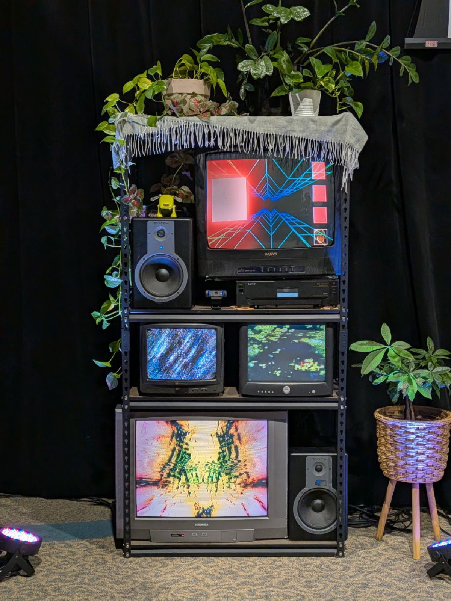
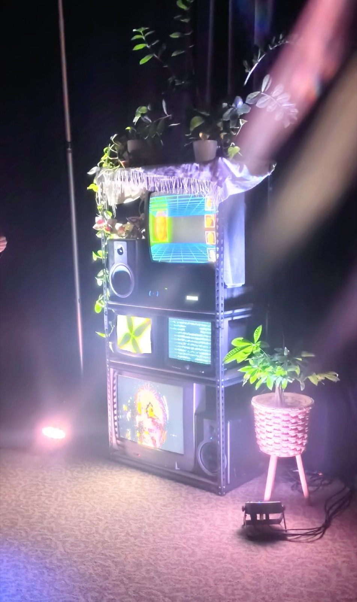
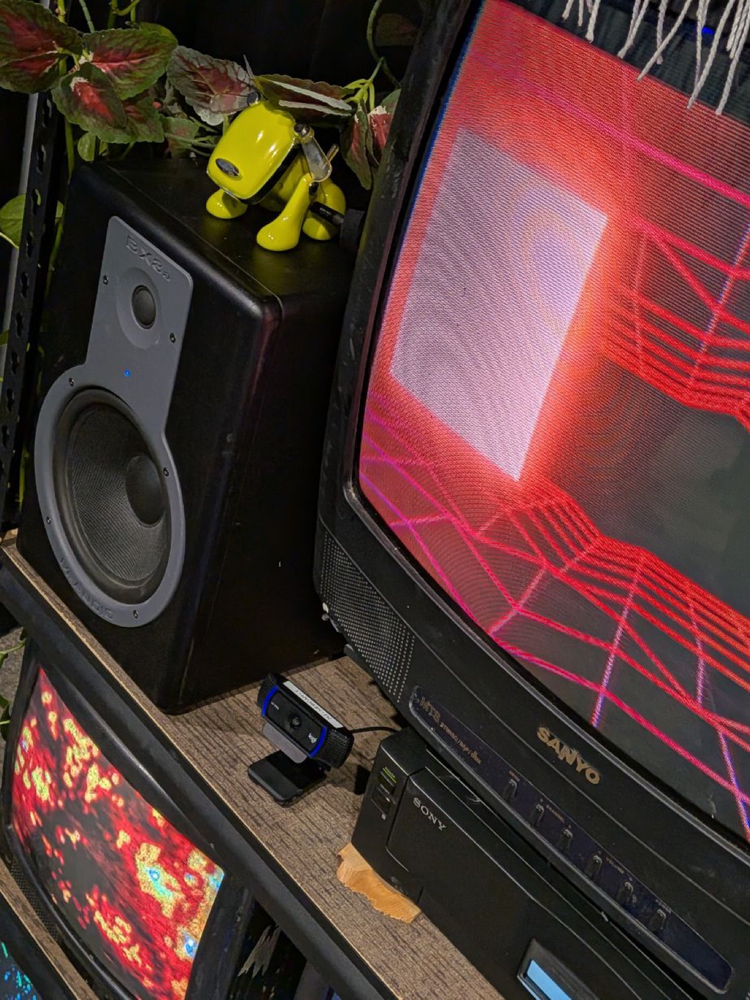
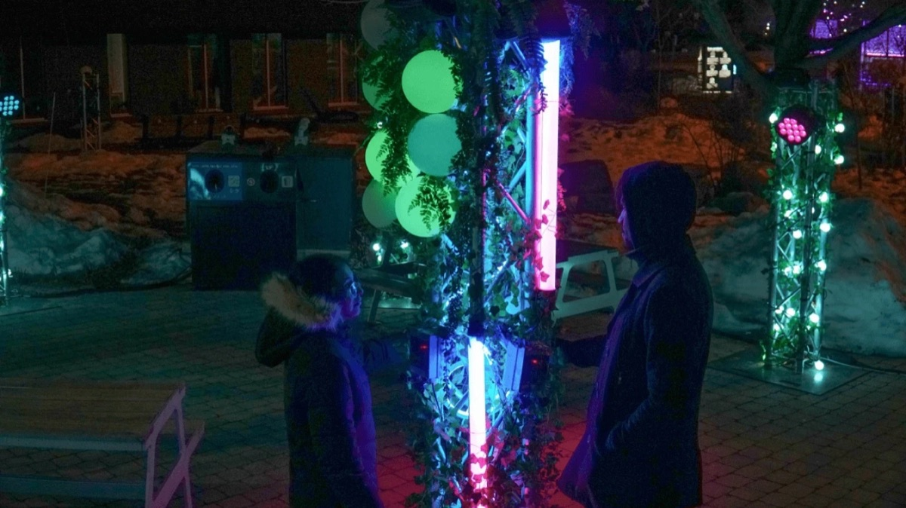

Images5 photos


Installations interactives
(4/22)
Un meuble de salon ordinaire, quatre télés cathodiques… et un système qui reconnaît, archive et se souvient de votre visage.
M.O.N.A II, présentée à 
Elle explore la reconnaissance, la mémoire et le consentement à travers une mise en scène volontairement banale : ce qui semble inoffensif révèle peu à peu un système qui observe, archive et réagit selon sa propre logique.
(Fonctionnement)
Comment le meuble passe de décor de salon à système qui vous observe.
Une étagère industrielle en acier avec panneaux de bois porte quatre télés cathodiques de tailles variées. Autour : haut-parleurs, plantes, couverture de grand-mère, et même un iDog branché en audio qui émet des sons spontanés.


Les visuels attirent les visiteurs. En s'approchant, une webcam capte leur visage et l'archive. L'écran du haut affiche alors une image déjà capturée de la même personne, avec les quatre visages qui lui ressemblent le plus. À la première visite, c'est la photo la plus récente qui apparaît.

J'ai créé une signature sonore à l'image de l'ambiguïté de l'œuvre : des ambiances discrètes et organiques, et des signaux déclenchés par la détection et l'archivage des visages. Le son, diffusé par quatre haut-parleurs sur l'étagère, réagit en temps réel aux gestes des visiteurs.
Images5 photos
